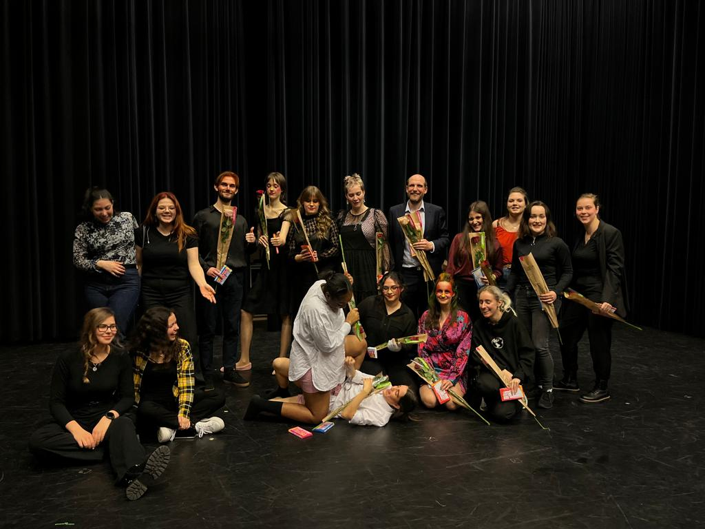
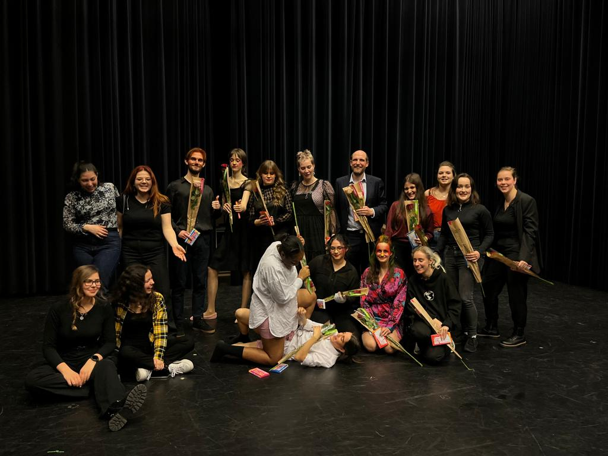

Strange Land Theatre
Year 1
 

Year 2
Year 3
Behind the Curtains of a theatre performace
Description Project
During my time at NHL Stenden, I was an active member of the Creative Business theatre group Strange Land Theatre from my first year until my third year. Over the course of three successful productions—Fox on the Brain, How to Hold Your Breath, and The Welkin—I had the opportunity to be in different roles in the backstage departments. .
In my first year, I joined the marketing department as a team member, contributing to promotional activities, social media content and designing the official logo, which is still used to this day. By my second year, I became a Co-Head of Marketing, where I led a diverse team in the execution of a marketing campaign, managed the group’s Instagram and offline presence.
In my third year, I decided to explore a different direction and joined the costumes department, where I was responsible for sourcing and coordinating wardrobe props that aligned with the production’s vision. My contribution to all three shows, along with my versatility across departments, reflects my ability to collaborate, lead, and adapt in a creative environment.
Ps: the Instagram account of the theatre - cb.strangeland